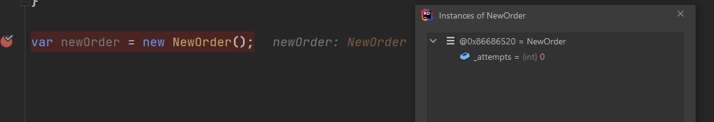
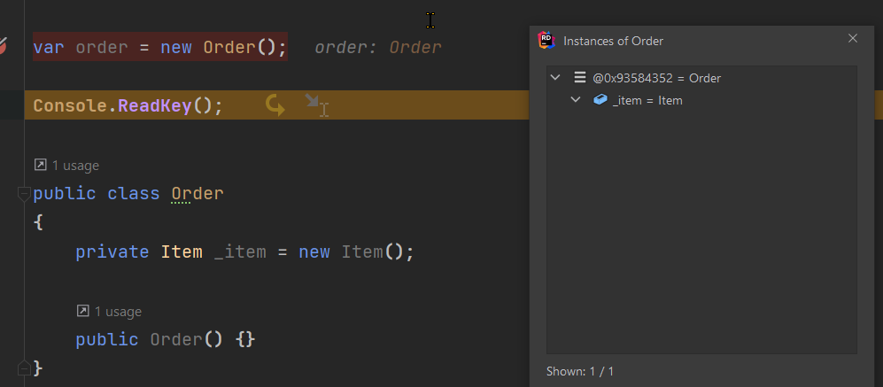
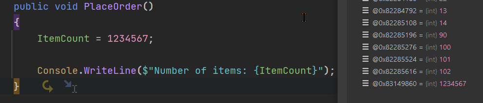
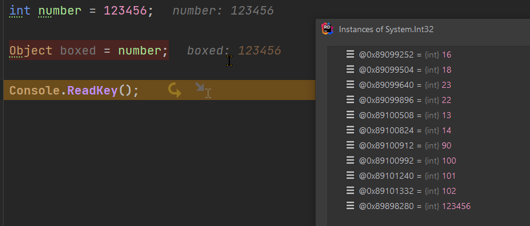
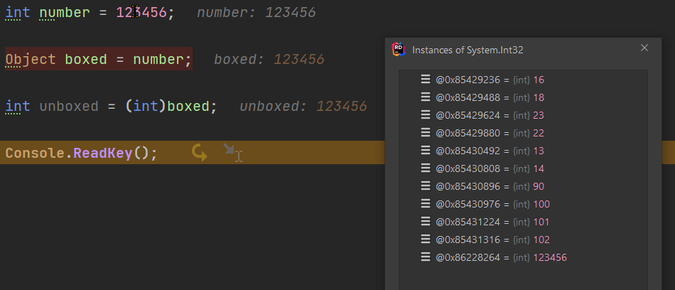

.NET Stack, Heap and Boxing
February 4, 2022 - 5 mins read time - 946 words - garrardkitchen
This week I have been investigating how to reduce memory allocation in a few HTTP APIs. I won’t go into any explicit work-related examples here but I will touch on facets relating to this effort.
Let’s start off by looking at Reference Types and Value types and how they get allocated into the Heap. I will also touch on concepts such as boxing and GC pressure.
Let me start off with some facts:
- A
Reference typesalways get allocated on the Heap - A
Value typemostly get put on the stack, but do get placed on the Heap sometimes. - If
Value typeis a class field (hoisted top-level class field), this gets allocated on the Heap along with it’s parent. - If
Value typeis boxed, this too gets allocated on the Heap - A
ref Structwill always be added to the Stack as the compiler will not allow it (field cannot be of byref-like type) to be added as a class field, butValue typein the Struct will be allocated if boxed
Yikes, confusing yes?
Examples
I’m going to break off into some examples next to help explain why and when Value Types get allocated.
Example 1: A Class Field
In this class, we can see that _attempts is a Value Type:
public class NewOrder
{
private int _attempts = 0;
public void PlaceOrder() {}
}
Due to it being a class field, it is allocated on Heap with it’s parent NewOrder. This is seen here:

The same will happen if you hoist a Struct to the root of the class. Take this code for instance, the Item Struct is placed on the Heap along with it’s parent (see screengrab below):
public class Order
{
private Item _item = new Item();
public Order() {}
}
public struct Item
{
public int Id { get; set; }
public string Sku { get; set; }
}

Example 2: Boxing
Class Properties Value Types don’t get placed on the Heap. However, if they get boxed (eg via string interpolation, method group, lambda expression), then they do.
This example shows the result on the ItemCount property after it gets boxed via string interpolation:

Concepts
Boxing and unboxing
Boxing is process of converting a Value Type to the type object (aka implicit conversion). It creates a new allocation in the Heap, copies in the Values type value and returns a reference.
See the last int32 instance in this screengrab:

Unboxing, on the hand, is the reverse and is the process of converting a type object to a Value Type (aka explicit conversion).
In this example, you see that the unboxing doesn’t get allocated onto the Heap:

GC Pressure
You may be asking the question, “why is any of this important?”
One reason it will become relevant is if you are observing GC pressure.
GC pressure means that the GC is feeling the strain and increasingly becoming overwhelmed deallocating memory. This could be the result of an incorrect GC configuration. If you’re not careful, your production docker container workload(s) may not have adeqaute available private memory. If this is the case then GC will be working twice as hard to avoid an OOM exception. Lack of memory will kill your app. Lack of CPU however will simply throttle your app and will not result in your app being kill. There is one example when this isn’t exactly true. Let’s say you have a pod running in your kubernetes cluster, and your configuration includes both Liveness and a Readiness probes. If your CPU is maxed out and your HTTP Listener can’t receive and respond to HTTP requests during the time the probes properties allow (combination of periodSeconds, failureThreshold and timeoutSeconds), then neither probe will have the availability to inform AKS that it’s still alive but just busy so don’t shut me down. So, the inevitable will happen. Yes, AKS will kill your pod and restart another; providing you’ve a ReplicaSet configured.
Reviewing your code and identifying changes that can reduce allocation, will help. It’s not the only approach. More often than not though, especially with a focus on using less space (Big O Notation), will result in larger method frames, plus verbose code, plus determinate collection sizes, etc… .
Also worth noting here too is that whenever GC executes, your running application will stop and will resume once GC completes.
To reiterate an earlier point, there are many approaches to reducing GC pressure. These are well documented and are easily found on the internet. I’ve included several below for completeness:
- Avoid memory leaks (big topic!)
- Use (when appropriate) in place of a Class
- Using a StringBuilder correctly
- Use .NET 6 & c# 10. String interpolaton uses the new DefaultStringInterpolatedHandler, avoiding unnecessary boxing on
Value Typevalues. - Avoid finalizers
- Setting the initial seize of a dynamic collection
- ArrayPool for short-lived arrays (large)
As a side note here due to the inclusion of the .NET 6 and string interpolation point above, I’ve now been using .NET 6 for a few months. This includes both exploratory and new projects. I was especially keen to start using .NET 6 from the benefits from process isolation (out-of-process) - fewer conflicts, DI and full control of the process that we’re all used to with paradigms outside of the serverless model. I have grown to like the minimum API. Like most, I initially felt uneasy with the lack of c# verbosity but now welcome it. I do, and I am sure I am not alone here, have been using both BenchmarkDotNET and SharpLab to compare performance and language decompilation. I didn’t bother much with .NET 5. This was due to .NET 5 never having the LTS label.